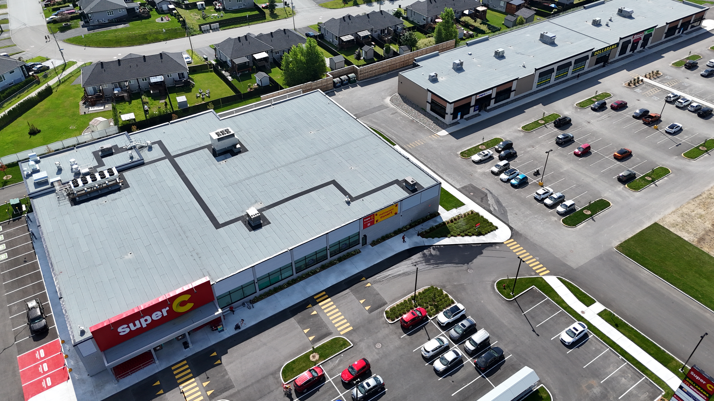
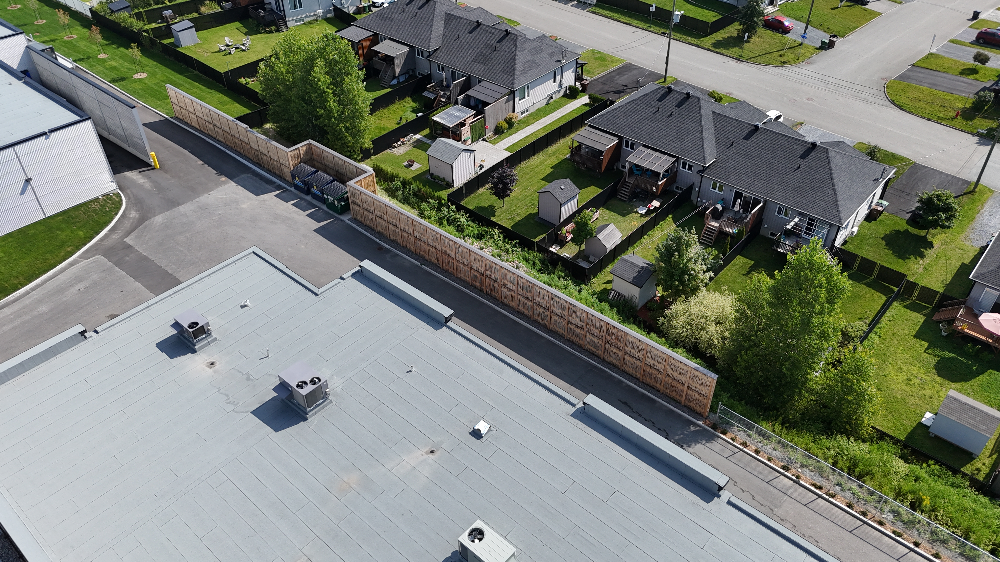
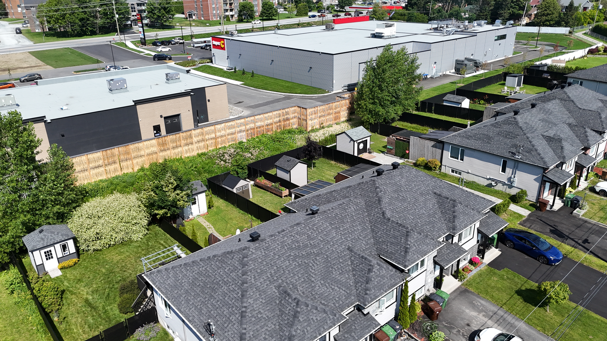
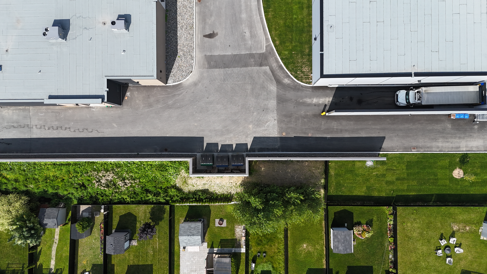

Super C — secteur Belvédère Sud
Revenir aux murs antibruit Super C (Metro inc.)
Super C (Metro inc.)
Le contexte
Le projet de développement commercial du Super C sur la rue Belvédère Sud à Sherbrooke nécessitait la gestion du bruit généré par les opérations de livraison.
Le quai de débarcadère est situé directement à proximité d'un quartier résidentiel de type I au sens de la Note d'instruction 98-01 du MELCCFP.
Les principales sources sonores identifiées :
- camions de livraison
- alarmes de recul
- unités de réfrigération des remorques
Les simulations acoustiques démontraient un dépassement des seuils permis sans mesure de mitigation.
La solution mise en place
Ramo a conçu, fabriqué et installé un mur antibruit absorbant à double façade en saule écorcé. Le système repose sur :
- une structure porteuse en acier galvanisé
- des panneaux absorbants intégrant laine minérale
- un parement extérieur en saule écorcé
Dans une version plus récente du système (Pilebyg Classic), la configuration type inclut des poteaux HSS galvanisés, des panneaux absorbants, une finition végétale en saule et un couronnement métallique.
Le mur agit principalement par absorption et atténuation de la propagation sonore.

Résultats et performance
L'étude acoustique conclut qu'un écran additionnel de 3,5 m permet d'atteindre le critère réglementaire de :
- LAeq 1 h = 45 dBA
- en période de jour
Le système agit par
- absorption acoustique
- effet barrière
- réduction de la ligne de visée sonore

Co-bénéfices
Intégration architecturale
Finition végétale adaptée à un environnement à la fois commercial et résidentiel.
Réduction des nuisances
Maintien des opérations logistiques tout en protégeant le voisinage résidentiel.
Acceptabilité sociale
Alternative beaucoup plus intégrée qu'un mur conventionnel en béton.


Lecture technique du projet
Un enjeu similaire ?
Contactez-nous.
Notre équipe est disponible pour discuter de vos besoins et vous proposer la solution adaptée.